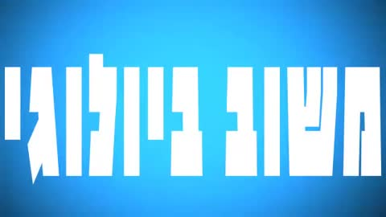
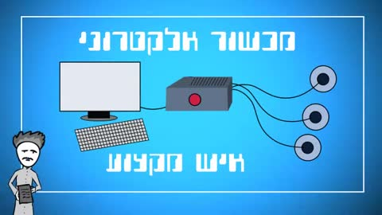
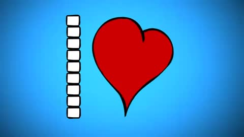
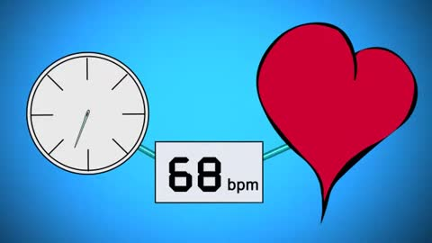
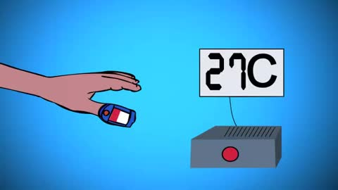
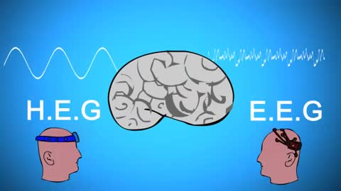
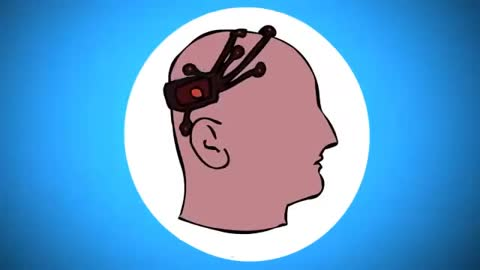
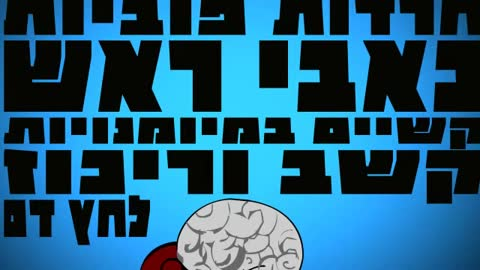
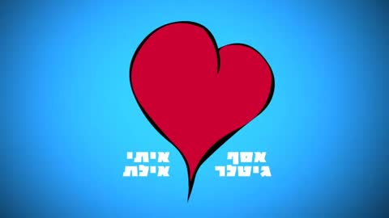

<meta charset="utf-8">
<meta name="viewport" content="width=device-width, initial-scale=1, viewport-fit=cover">
<title>ביופידבק, גרסה חדשה</title>
<meta name="claude:viewport-fit-sides" content="cover">
<link rel="stylesheet" href="https://fonts.googleapis.com/css2?family=Assistant:wght@400;500;600&family=Secular+One&family=IBM+Plex+Mono:wght@400&display=swap">
<style>
/* Layout: one calm reading column; scenes as a filmstrip list, styles as live 16:9 screens, voices as a row of players. */
:root {
  --bg: #EDF1F3; --surface: #FFFFFF; --ink: #13212B; --muted: #5B6C77; --line: #D3DCE1;
  --accent: #0C8580; --pulse: #D9475F;
  --display: 'Secular One', 'Assistant', 'Arial Hebrew', sans-serif;
  --body: 'Assistant', 'Arial Hebrew', 'Segoe UI', sans-serif;
  --mono: 'IBM Plex Mono', ui-monospace, Consolas, monospace;
}
@media (prefers-color-scheme: dark) { :root:not([data-theme="light"]) {
  --bg: #0B1218; --surface: #121C24; --ink: #E3ECF1; --muted: #8FA2AE; --line: #22313C;
  --accent: #45CDC2; --pulse: #FF7A8C; color-scheme: dark } }
:root[data-theme="dark"] {
  --bg: #0B1218; --surface: #121C24; --ink: #E3ECF1; --muted: #8FA2AE; --line: #22313C;
  --accent: #45CDC2; --pulse: #FF7A8C; color-scheme: dark }

body { background: var(--bg); color: var(--ink); font-family: var(--body); font-size: 17px; line-height: 1.6;
  padding-left: max(16px, env(safe-area-inset-left, 0px)); padding-right: max(16px, env(safe-area-inset-right, 0px)); }
main { max-width: 1120px; margin: 0 auto; padding-block: 48px 96px; display: grid; gap: 88px; }
h1, h2, h3 { font-family: var(--display); font-weight: 400; margin: 0; text-wrap: balance; line-height: 1.15; }
h1 { font-size: clamp(40px, 6vw, 68px); }
h2 { font-size: clamp(28px, 3.6vw, 40px); }
h3 { font-size: 22px; }
p { margin: 0; }
.eyebrow { font-family: var(--mono); font-size: 13px; letter-spacing: .14em; color: var(--accent); direction: ltr; text-align: right; }
.lead { color: var(--muted); max-width: 72ch; font-size: 19px; text-wrap: pretty; }

header { display: grid; gap: 18px; }
.ecg { width: 100%; height: 70px; display: block; }
.ecg path { fill: none; stroke: var(--pulse); stroke-width: 2.2; stroke-linejoin: round; stroke-linecap: round; }
.how { background: var(--surface); border: 1px solid var(--line); border-radius: 12px; padding: 18px 22px; display: grid; gap: 6px; max-width: 760px; }
.how strong { font-family: var(--display); font-weight: 400; font-size: 20px; }

section { display: grid; gap: 28px; }
.section-head { display: grid; gap: 10px; }

.scenes { list-style: none; margin: 0; padding: 0; display: grid; gap: 1px; background: var(--line); border: 1px solid var(--line); border-radius: 12px; overflow: hidden; }
.scene { display: grid; grid-template-columns: 240px minmax(0, 1fr); gap: 22px; padding: 18px; background: var(--surface); align-items: start; }
.scene img { width: 100%; aspect-ratio: 16/9; object-fit: cover; border-radius: 6px; display: block; }
.scene-text { display: grid; gap: 8px; min-width: 0; }
.scene-head { display: flex; flex-wrap: wrap; align-items: baseline; gap: 6px 14px; }
.tc { font-family: var(--mono); font-size: 13px; color: var(--muted); direction: ltr; font-variant-numeric: tabular-nums; }
.vo { font-size: 17px; }
.vis { font-size: 15px; color: var(--muted); }
.vis span, .ref span { color: var(--ink); font-weight: 600; }

.orig { display: grid; grid-template-columns: 240px minmax(0, 1fr); gap: 22px; align-items: center; }
.orig img { width: 100%; border-radius: 6px; display: block; }
.orig p { color: var(--muted); }
.styles { display: grid; grid-template-columns: repeat(2, minmax(0, 1fr)); gap: 40px 32px; }
.style { display: grid; gap: 16px; align-content: start; }
.frame { position: relative; aspect-ratio: 16 / 9; max-width: 100%; overflow: hidden; border-radius: 10px; background: #05080C; box-shadow: 0 1px 0 var(--line), 0 18px 40px -24px rgba(10, 30, 40, .45); }
.frame iframe { position: absolute; top: 0; left: 0; width: 1920px; height: 1080px; border: 0; transform-origin: 0 0; pointer-events: none; }
.style-body { display: grid; gap: 10px; }
.style-head, .voice-head { display: flex; align-items: center; gap: 12px; }
.letter, .num { font-family: var(--mono); font-size: 15px; width: 32px; height: 32px; display: grid; place-items: center; border-radius: 50%; border: 1.5px solid var(--accent); color: var(--accent); flex: none; }
.tags { list-style: none; margin: 0; padding: 0; display: flex; flex-wrap: wrap; gap: 8px; }
.tags li { font-size: 14px; padding: 2px 12px; border-radius: 99px; background: color-mix(in srgb, var(--accent) 12%, transparent); color: var(--ink); }
.ref { font-size: 15px; color: var(--muted); }
.note { font-size: 15px; color: var(--muted); text-wrap: pretty; padding: 12px 16px; border: 1px dashed var(--line); border-radius: 10px; margin-top: 12px; }
.note b { color: var(--ink); font-weight: 600; }

.sample { font-size: 19px; padding-inline-start: 18px; border-inline-start: 3px solid var(--pulse); max-width: 62ch; }
.voices { list-style: none; margin: 0; padding: 0; display: grid; grid-template-columns: repeat(2, minmax(0, 1fr)); gap: 16px; }
.voice { background: var(--surface); border: 1px solid var(--line); border-radius: 12px; padding: 18px 20px; display: grid; gap: 10px; }
.voice p { color: var(--muted); font-size: 15px; }
.dur { margin-inline-start: auto; font-family: var(--mono); font-size: 13px; color: var(--muted); }
audio { width: 100%; height: 40px; }

.steps { margin: 0; padding-inline-start: 22px; display: grid; gap: 8px; max-width: 70ch; }
.steps li::marker { font-family: var(--mono); color: var(--accent); }
footer { color: var(--muted); font-size: 14px; border-top: 1px solid var(--line); padding-top: 18px; }

.frame { cursor: zoom-in; }
.frame:focus-visible { outline: 3px solid var(--accent); outline-offset: 3px; }
.zoom-hint { position: absolute; top: 10px; left: 10px; z-index: 2; font-size: 13px; padding: 2px 10px; border-radius: 99px; background: rgba(0, 0, 0, .55); color: #FFFFFF; pointer-events: none; }
.frame.zoom { position: fixed; z-index: 100; top: 50%; left: 50%; max-width: none; border-radius: 0; cursor: zoom-out;
  width: min(100vw, calc(100vh * 16 / 9)); width: min(100vw, calc(100dvh * 16 / 9));
  transform: translate(-50%, -50%); box-shadow: none; }
.frame.zoom .zoom-hint { display: none; }
.zoom-back { position: fixed; inset: 0; z-index: 99; background: rgba(2, 5, 8, .95); cursor: zoom-out; }

@media (max-width: 760px) {
  .orig { grid-template-columns: minmax(0, 1fr); }
  .styles, .voices { grid-template-columns: minmax(0, 1fr); }
  main { gap: 64px; }
  .scene { grid-template-columns: 120px minmax(0, 1fr); gap: 12px 14px; padding: 14px; }
  .scene-text { display: contents; }
  .scene img { grid-column: 1; grid-row: 1; }
  .scene-head { grid-column: 2; grid-row: 1; flex-direction: column; align-items: flex-start; gap: 2px; align-self: center; }
  .vo, .vis { grid-column: 1 / -1; }
  .vo { font-size: 16px; }
}
/* upright phone: show the enlarged frame sideways, like a video player */
@media (max-width: 760px) and (orientation: portrait) {
  .frame.zoom { width: min(100vh, calc(100vw * 16 / 9)); width: min(100dvh, calc(100vw * 16 / 9)); transform: translate(-50%, -50%) rotate(90deg); }
}
@media (prefers-reduced-motion: reduce) { .frame { cursor: default; } }
</style>

<main dir="rtl" lang="he">
  <header>
    <p class="eyebrow">BIOFEEDBACK · REDESIGN · 2026</p>
    <h1>ביופידבק, גרסה חדשה</h1>
    <svg class="ecg" viewBox="0 0 1120 70" preserveAspectRatio="none" aria-hidden="true"><path id="hero-ecg" d=""></path></svg>
    <p class="lead">פירקתי את הסרטון המקורי לסצנות ותמללתי את כל הקריינות שלו.<br>מתחת יש ארבע אופציות סגנוניות וארבע אופציות לקריינות, לבחירתך.</p>
    <div class="how"><strong>מה צריך ממך</strong><p>לבחור סגנון ויזואלי אחד (A–D) וקול אחד לקריינות (1–4), שיחד ייצרו את הגרסה החדשה.<br>למשל: <b>B + 1</b>.</p></div>
  </header>

  <section aria-labelledby="h-scenes">
    <div class="section-head">
      <h2 id="h-scenes">הסרטון המקורי, סצנה אחר סצנה</h2>
      <p class="lead">2:16 דקות, 9 סצנות, והקריינות המקורית מילה במילה.<br>זה הבסיס לתסריט המהודק שאשלח לאישור.</p>
    </div>
    <ol class="scenes">
<li class="scene">
  
  <div class="scene-text"><div class="scene-head"><span class="tc">00:00–00:07</span><h3>פתיחה</h3></div>
  <p class="vo">ביופידבק. משוב ביולוגי. מה זה בעצם משוב ביולוגי?</p><p class="vis"><span>בתמונה:</span> טיפוגרפיה קינטית לבנה על רקע כחול, סימן שאלה.</p></div></li>
<li class="scene">
  
  <div class="scene-text"><div class="scene-head"><span class="tc">00:07–00:21</span><h3>הגדרה</h3></div>
  <p class="vo">משוב ביולוגי הוא תחום טיפול העושה שימוש במכשור אלקטרוני בליווי איש מקצוע, וזאת בכדי לאפשר למטופל להכיר את התהליכים הפסיכו־פיזיולוגיים בגופו, לווסת אותם ולנהל אותם.</p><p class="vis"><span>בתמונה:</span> מחשב, מכשיר וחיישנים, דמות של מטפל. פנים עם מוח, לב עם גל.</p></div></li>
<li class="scene">
  
  <div class="scene-text"><div class="scene-head"><span class="tc">00:21–00:30</span><h3>העיקרון</h3></div>
  <p class="vo">בכדי להבין באמת מה הוא משוב ביולוגי, צריך קודם להכיר בעובדה שמה שניתן למדוד ניתן לשנות.</p><p class="vis"><span>בתמונה:</span> הכותרת &quot;משוב ביולוגי&quot;, מד ועיגול אדום שהופך ללב.</p></div></li>
<li class="scene">
  
  <div class="scene-text"><div class="scene-head"><span class="tc">00:30–00:54</span><h3>דוגמה 1: קצב הלב</h3></div>
  <p class="vo">נניח ונמדוד את קצב פעימות הלב שלנו, והנתון הנמדד יהיה שישים ושמונה פעימות בדקה. האם רק באמצעות צפייה בנתון זה נוכל לשנות את קצב הפעימות לנניח שבעים ושתיים פעימות בדקה? בהחלט כן. ומה עם הכיוון ההפוך? האם נוכל להוריד את ממוצע פעימות הלב לשישים וחמש? בפירוש כן.</p><p class="vis"><span>בתמונה:</span> שעון, צג BPM ולב: 68, 72, 65. אגודל למעלה.</p></div></li>
<li class="scene">
  
  <div class="scene-text"><div class="scene-head"><span class="tc">00:55–01:23</span><h3>דוגמה 2: חום כפות הידיים</h3></div>
  <p class="vo">ניקח דוגמה נוספת: האם יכול אדם לשנות את טמפרטורת כפות ידיו? נניח ונמדוד את טמפרטורת אצבעות כפות הידיים של אדם מסוים, והנתון יהיה שלושים ואחת מעלות צלזיוס. האם באמצעות מודעות לשינויים במדד זה יכול אותו אדם להעלות את חום כפות ידיו לנניח שלושים ושלוש מעלות, או לחילופין להפחית לעשרים ותשע? כמובן שהתשובה חיובית. ניתן אף ללמד ילדים קטנים לעשות זאת.</p><p class="vis"><span>בתמונה:</span> יד עם חיישן אצבע ומכשיר: ‎20°C עד ‎33°C ובחזרה ל־‎29°C. שני ילדים.</p></div></li>
<li class="scene">
  
  <div class="scene-text"><div class="scene-head"><span class="tc">01:24–01:50</span><h3>דוגמה 3: פעילות מוחית</h3></div>
  <p class="vo">בואו נרחיק לכת ונדבר על פעילות מוחית. נמדוד את הפעילות המוחית שלנו באמצעות מדידת גלי המוח, או באמצעות מדידת זרימת הדם המוחית. האם נוכל לבצע שינויים בפעילויות אלו תוך שימוש בכוחות המחשבה בלבד? ובכן, גם כאן התשובה היא כן. ניתן ללמוד לשנות את הפעילות המוחית. אם ניתן למדוד, ניתן לשנות. זהו משוב ביולוגי.</p><p class="vis"><span>בתמונה:</span> מוח, שני ראשים עם חיישני EEG ו־HEG, גלים על המסך.</p></div></li>
<li class="scene">
  
  <div class="scene-text"><div class="scene-head"><span class="tc">01:51–02:01</span><h3>יעילות</h3></div>
  <p class="vo">השימוש במשוב ביולוגי כטיפול בפני עצמו, או בשילוב טיפולים גופניים או רגשיים אחרים, הוכח כיעיל במגוון מצבים רפואיים ופסיכולוגיים,</p><p class="vis"><span>בתמונה:</span> ראש עם חיישן אוזן, ראש עם כובע EEG, יד עם חיישני אצבעות.</p></div></li>
<li class="scene">
  
  <div class="scene-text"><div class="scene-head"><span class="tc">02:01–02:11</span><h3>למי זה עוזר</h3></div>
  <p class="vo">ביניהם כאבי ראש, יתר לחץ דם, חרדות ופוביות, קשיים במיומנויות קשב וריכוז, הפרעות מצב רוח, התמכרויות ועוד.</p><p class="vis"><span>בתמונה:</span> מוח על ספת טיפולים, ומילים שממלאות את המסך.</p></div></li>
<li class="scene">
  
  <div class="scene-text"><div class="scene-head"><span class="tc">02:11–02:16</span><h3>סיום</h3></div>
  <p class="vo">(ללא קריינות)</p><p class="vis"><span>בתמונה:</span> לב אדום וקרדיטים: אסף גיטלר, איתי אילת.</p></div></li>
    </ol>
  </section>

  <section aria-labelledby="h-styles">
    <div class="section-head">
      <h2 id="h-styles">ארבע אופציות סגנוניות</h2>
      <p class="lead">כל האופציות מציגות את הרעיון המרכזי של הסרטון: מודדים את הלב ולומדים להאט אותו.<br>ההתרחשויות על המסך יהיו מתואמות ומתוזמנות לקריינות.</p>
    </div>
    <div class="orig">
      
      <p><b>המקור:</b> כך נראה הרגע הזה היום (סצנה 4, דוגמת קצב הלב).<br>כל ארבע האופציות למטה בונות אותו מחדש.</p>
    </div>
    <div class="styles">
<article class="style" id="style-A">
  <div class="frame"><iframe title="סגנון A: מוניטור" srcdoc="&lt;!doctype html&gt;
&lt;html lang=&quot;he&quot; dir=&quot;rtl&quot;&gt;
&lt;head&gt;
&lt;meta charset=&quot;utf-8&quot;&gt;
&lt;title&gt;Style A — Quiet Monitor&lt;/title&gt;
&lt;link href=&quot;https://fonts.googleapis.com/css2?family=IBM+Plex+Mono:wght@200;300;400&amp;family=IBM+Plex+Sans+Hebrew:wght@200;300;400;500&amp;display=swap&quot; rel=&quot;stylesheet&quot;&gt;
&lt;style&gt;
  html, body { margin: 0; width: 1920px; height: 1080px; transform-origin: 0 0; overflow: hidden; background: #03070D; }
  canvas { position: absolute; inset: 0; }
  .ui { position: absolute; inset: 0; font-family: &#x27;IBM Plex Sans Hebrew&#x27;, sans-serif; color: #DDF7FF; }
  .ui &gt; * { position: absolute; }
  .mono { font-family: &#x27;IBM Plex Mono&#x27;, monospace; direction: ltr; }
  .br { width: 34px; height: 34px; border: 1.5px solid rgba(150,235,255,.45); }
  .tl { left: 56px; top: 56px; border-right: 0; border-bottom: 0; }
  .tr { right: 56px; top: 56px; border-left: 0; border-bottom: 0; }
  .bl { left: 56px; bottom: 56px; border-right: 0; border-top: 0; }
  .brr { right: 56px; bottom: 56px; border-left: 0; border-top: 0; }
  .meta { left: 110px; top: 66px; font-size: 18px; letter-spacing: .18em; color: rgba(170,230,255,.6); }
  .title { right: 110px; top: 58px; text-align: right; font-weight: 300; font-size: 34px; letter-spacing: .04em; }
  .title .mono { display: block; font-size: 15px; letter-spacing: .4em; color: rgba(170,230,255,.55); margin-top: 4px; }
  .label { left: 146px; top: 236px; font-size: 26px; font-weight: 400; color: rgba(200,245,255,.8); }
  .label .mono { font-size: 16px; letter-spacing: .25em; color: rgba(170,230,255,.5); margin-right: 10px; }
  .big { left: 128px; top: 262px; font-size: 290px; font-weight: 200; line-height: 1; color: #EFFFFF; text-shadow: 0 0 40px rgba(63,242,210,.25); }
  .unit { left: 500px; top: 448px; font-size: 30px; letter-spacing: .2em; color: #3FF2D2; }
  .trend { left: 146px; top: 690px; font-size: 22px; color: rgba(200,245,255,.7); }
  .trend b { font-family: &#x27;IBM Plex Mono&#x27;; font-weight: 400; color: #3FF2D2; }
  .ecgl { left: 110px; top: 905px; font-size: 15px; letter-spacing: .3em; color: rgba(170,230,255,.45); }
  .sub { left: 0; right: 0; top: 968px; text-align: center; font-size: 42px; font-weight: 400; color: #F4FFFF; text-shadow: 0 2px 18px rgba(0,0,0,.6); }
&lt;/style&gt;
&lt;/head&gt;
&lt;body&gt;
&lt;canvas id=&quot;c&quot; width=&quot;1920&quot; height=&quot;1080&quot;&gt;&lt;/canvas&gt;
&lt;div class=&quot;ui&quot;&gt;
  &lt;div class=&quot;br tl&quot;&gt;&lt;/div&gt;&lt;div class=&quot;br tr&quot;&gt;&lt;/div&gt;&lt;div class=&quot;br bl&quot;&gt;&lt;/div&gt;&lt;div class=&quot;br brr&quot;&gt;&lt;/div&gt;
  &lt;div class=&quot;meta mono&quot;&gt;SESSION 03 · 00:42 · HRV 68 ms&lt;/div&gt;
  &lt;div class=&quot;title&quot;&gt;משוב ביולוגי&lt;span class=&quot;mono&quot;&gt;BIOFEEDBACK&lt;/span&gt;&lt;/div&gt;
  &lt;div class=&quot;label&quot;&gt;קצב לב&lt;span class=&quot;mono&quot;&gt;HEART RATE&lt;/span&gt;&lt;/div&gt;
  &lt;div class=&quot;big mono&quot; id=&quot;bpm&quot;&gt;64&lt;/div&gt;
  &lt;div class=&quot;unit mono&quot;&gt;BPM&lt;/div&gt;
  &lt;div class=&quot;trend&quot;&gt;ירידה של &lt;b&gt;24&lt;/b&gt; פעימות בדקה, תוך דקה של נשימה איטית&lt;/div&gt;
  &lt;div class=&quot;ecgl mono&quot;&gt;ECG · LIVE&lt;/div&gt;
  &lt;div class=&quot;sub&quot;&gt;כשאנחנו רגועים, הלב מאט.&lt;/div&gt;
&lt;/div&gt;
&lt;script&gt;// Shared helpers for the style frames. ?t=&lt;seconds&gt; renders one still frame; no t = live animation.
const Q = new URLSearchParams(location.search);
const T0 = Q.has(&#x27;t&#x27;) ? parseFloat(Q.get(&#x27;t&#x27;)) : null;

function mulberry32(a) {
  return function () {
    a |= 0; a = a + 0x6D2B79F5 | 0;
    let t = Math.imul(a ^ a &gt;&gt;&gt; 15, 1 | a);
    t = t + Math.imul(t ^ t &gt;&gt;&gt; 7, 61 | t) ^ t;
    return ((t ^ t &gt;&gt;&gt; 14) &gt;&gt;&gt; 0) / 4294967296;
  };
}

// Classic heart curve, screen coordinates (y down). u=0 top cusp, u=PI bottom tip at y=+17.
function heartXY(u) {
  const x = 16 * Math.pow(Math.sin(u), 3);
  const y = 13 * Math.cos(u) - 5 * Math.cos(2 * u) - 2 * Math.cos(3 * u) - Math.cos(4 * u);
  return [x, -y];
}

function heartPath(cx, cy, s, n = 200) {
  const p = new Path2D();
  for (let i = 0; i &lt;= n; i++) {
    const [hx, hy] = heartXY(i / n * Math.PI * 2);
    i ? p.lineTo(cx + hx * s, cy + hy * s) : p.moveTo(cx + hx * s, cy + hy * s);
  }
  p.closePath();
  return p;
}

// One heartbeat of an ECG trace, p in [0,1), returns -0.25..1
function ecg(p) {
  const g = (c, a, w) =&gt; a * Math.exp(-(((p - c) / w) ** 2));
  return g(.18, .12, .025) + g(.36, -.12, .008) + g(.39, 1, .010) + g(.42, -.25, .010) + g(.66, .28, .045);
}

// Render scale. Styles draw in 1920x1080 units, but inside the pitch page the frame is shown
// much smaller, so the canvas backing store is sized to what is actually on screen.
let K = 1;

// shadowBlur ignores the canvas transform, so scale it by hand to keep the glow the same size
function scaled(ctx) {
  const d = Object.getOwnPropertyDescriptor(CanvasRenderingContext2D.prototype, &#x27;shadowBlur&#x27;);
  Object.defineProperty(ctx, &#x27;shadowBlur&#x27;, {
    configurable: true,
    get() { return d.get.call(this) / K; },
    set(v) { d.set.call(this, v * K); },
  });
  return ctx;
}

function fitCanvas(c, ctx) {
  let shown = 1920;
  try {
    const r = window.frameElement &amp;&amp; window.frameElement.getBoundingClientRect();
    if (r &amp;&amp; r.width) shown = Math.max(r.width, r.height);
  } catch (e) {}
  const dpr = Math.min(2, window.devicePixelRatio || 1);
  const k = Math.min(1, Math.max(0.2, Math.ceil(shown * dpr / 1920 * 10) / 10));
  if (k !== K || c.width !== Math.round(1920 * k)) {
    K = k;
    c.width = Math.round(1920 * k); c.height = Math.round(1080 * k);
    c.style.width = &#x27;1920px&#x27;; c.style.height = &#x27;1080px&#x27;;
  }
  ctx.setTransform(K, 0, 0, K, 0, 0);
}

function run(draw, canvas) {
  const ctx = canvas ? canvas.getContext(&#x27;2d&#x27;) : null;
  const go = () =&gt; {
    if (T0 !== null) { if (ctx) fitCanvas(canvas, ctx); draw(T0); document.body.dataset.ready = 1; return; }
    // In the pitch page: skip frames while scrolled off-screen, hold a still frame when the page
    // says this style shouldn&#x27;t play (window.__play === false), and run at 30 fps on small screens.
    let visible = true, drawn = false, last = 0;
    if (&#x27;IntersectionObserver&#x27; in window) new IntersectionObserver(es =&gt; { visible = es[0].isIntersecting; }).observe(document.body);
    const still = window.matchMedia &amp;&amp; matchMedia(&#x27;(prefers-reduced-motion: reduce)&#x27;).matches;
    const touch = window.matchMedia &amp;&amp; matchMedia(&#x27;(pointer: coarse)&#x27;).matches;
    const s = performance.now();
    const f = n =&gt; {
      requestAnimationFrame(f);
      if (!visible) return;
      const play = window.__play !== false &amp;&amp; !still;
      if (!play &amp;&amp; drawn) return;
      if (play &amp;&amp; (touch || K &lt; 0.5) &amp;&amp; n - last &lt; 31) return;
      last = n;
      if (ctx) fitCanvas(canvas, ctx);
      draw((n - s) / 1000);
      drawn = true;
    };
    requestAnimationFrame(f);
  };
  document.fonts ? document.fonts.ready.then(go) : go();
}
&lt;/script&gt;
&lt;script&gt;
const c = document.getElementById(&#x27;c&#x27;), x = scaled(c.getContext(&#x27;2d&#x27;));
const bpmEl = document.getElementById(&#x27;bpm&#x27;);

function draw(t) {
  const g = x.createRadialGradient(1360, 440, 40, 1150, 520, 1300);
  g.addColorStop(0, &#x27;#10263D&#x27;); g.addColorStop(.5, &#x27;#081422&#x27;); g.addColorStop(1, &#x27;#03070D&#x27;);
  x.fillStyle = g; x.fillRect(0, 0, 1920, 1080);

  x.strokeStyle = &#x27;rgba(110,200,255,0.045)&#x27;; x.lineWidth = 1; x.beginPath();
  for (let i = 0; i &lt;= 1920; i += 48) { x.moveTo(i + .5, 0); x.lineTo(i + .5, 1080); }
  for (let j = 0; j &lt;= 1080; j += 48) { x.moveTo(0, j + .5); x.lineTo(1920, j + .5); }
  x.stroke();

  const shown = Math.round(64 + 24 * Math.max(0, 1 - t / 6) ** 2);
  bpmEl.textContent = shown;
  const per = 60 / shown, ph = (t % per) / per;
  const beat = Math.exp(-(((ph - 0.39) / 0.07) ** 2));

  // dial + heart
  const cx = 1370, cy = 430;
  x.save(); x.translate(cx, cy);
  for (let i = 0; i &lt; 120; i++) {
    const a = i / 120 * Math.PI * 2 - Math.PI / 2, major = i % 10 === 0;
    const r1 = 300, r2 = major ? 280 : 290;
    x.strokeStyle = major ? &#x27;rgba(150,235,255,.55)&#x27; : &#x27;rgba(150,235,255,.16)&#x27;;
    x.lineWidth = major ? 2 : 1;
    x.beginPath(); x.moveTo(Math.cos(a) * r1, Math.sin(a) * r1); x.lineTo(Math.cos(a) * r2, Math.sin(a) * r2); x.stroke();
  }
  const prog = (shown - 40) / 80;
  x.strokeStyle = &#x27;#3FF2D2&#x27;; x.lineWidth = 3; x.shadowColor = &#x27;#3FF2D2&#x27;; x.shadowBlur = 14;
  x.beginPath(); x.arc(0, 0, 315, -Math.PI / 2, -Math.PI / 2 + prog * Math.PI * 2); x.stroke();
  const ea = -Math.PI / 2 + prog * Math.PI * 2;
  x.fillStyle = &#x27;#D8FFF7&#x27;; x.beginPath(); x.arc(Math.cos(ea) * 315, Math.sin(ea) * 315, 6, 0, 7); x.fill();
  x.shadowBlur = 0; x.strokeStyle = &#x27;rgba(150,235,255,.10)&#x27;; x.lineWidth = 1;
  x.beginPath(); x.arc(0, 0, 250, 0, 7); x.stroke();

  const S = 10 * (1 + beat * 0.04);
  for (let k = 3; k &gt;= 0; k--) {
    const p = heartPath(0, 12, S * (1 - k * 0.17));
    x.strokeStyle = k === 0 ? &#x27;rgba(255,120,140,.95)&#x27; : `rgba(255,120,140,${0.32 - k * 0.07})`;
    x.lineWidth = k === 0 ? 3 : 1.4; x.shadowColor = &#x27;#FF5A78&#x27;; x.shadowBlur = k === 0 ? 26 + beat * 20 : 0;
    x.stroke(p);
  }
  x.shadowBlur = 0;
  const pr = ph;
  x.strokeStyle = `rgba(255,120,140,${0.5 * (1 - pr)})`; x.lineWidth = 2;
  x.stroke(heartPath(0, 12, S * (1 + pr * 0.5)));
  x.restore();

  // heart-rate history sparkline (88 -&gt; 64)
  const sx = 146, sy = 560, sw = 620, sh = 100;
  x.strokeStyle = &#x27;rgba(150,235,255,.15)&#x27;; x.lineWidth = 1; x.beginPath();
  for (let k = 0; k &lt;= 2; k++) { x.moveTo(sx, sy + k * sh / 2 + .5); x.lineTo(sx + sw, sy + k * sh / 2 + .5); }
  x.stroke();
  x.strokeStyle = &#x27;rgba(191,255,243,.9)&#x27;; x.lineWidth = 2.5; x.shadowColor = &#x27;#3FF2D2&#x27;; x.shadowBlur = 10; x.beginPath();
  for (let i = 0; i &lt;= 120; i++) {
    const u = i / 120, v = 88 - 24 * (1 - (1 - u) ** 2) + Math.sin(u * 47) * 1.1 * (1 - u);
    const yy = sy + (88 - v) / 24 * sh;
    i ? x.lineTo(sx + u * sw, yy) : x.moveTo(sx + u * sw, yy);
  }
  x.stroke(); x.shadowBlur = 0;
  x.fillStyle = &#x27;#3FF2D2&#x27;; x.beginPath(); x.arc(sx + sw, sy + sh, 5, 0, 7); x.fill();

  // live ECG sweep
  const y0 = 860, A = 105, speed = 330, W = 1920, head = (t * speed) % W;
  x.lineWidth = 3; x.lineCap = &#x27;round&#x27;; x.strokeStyle = &#x27;#3FF2D2&#x27;; x.shadowColor = &#x27;#3FF2D2&#x27;; x.shadowBlur = 14;
  // the fading trail is grouped into 16 brightness steps, one glowing stroke each
  const steps = 16, trail = Array.from({ length: steps }, () =&gt; new Path2D());
  let prev = null;
  for (let px = 0; px &lt; W; px += 3) {
    const age = px &lt;= head ? (head - px) / speed : (head + W - px) / speed;
    if (px &gt; head &amp;&amp; px &lt; head + 50) { prev = null; continue; }
    const tt = t - age, p = (((tt % per) + per) % per) / per, yy = y0 - ecg(p) * A;
    const al = 1 - age / 5.2;
    if (prev &amp;&amp; al &gt; 0) { const s = trail[Math.min(steps - 1, Math.floor(al * steps))]; s.moveTo(prev[0], prev[1]); s.lineTo(px, yy); }
    prev = [px, yy];
  }
  trail.forEach((s, i) =&gt; { x.globalAlpha = (i + 0.5) / steps; x.stroke(s); });
  x.globalAlpha = 1; x.lineCap = &#x27;butt&#x27;;
  const hy = y0 - ecg(ph) * A;
  x.fillStyle = &#x27;#EFFFFB&#x27;; x.shadowBlur = 30; x.beginPath(); x.arc(head, hy, 6, 0, 7); x.fill();
  x.shadowBlur = 0;
}
run(draw, c);
&lt;/script&gt;
&lt;/body&gt;
&lt;/html&gt;
" loading="lazy" scrolling="no"></iframe></div>
  <div class="style-body"><div class="style-head"><span class="letter">A</span><h3>מוניטור</h3></div>
  <p>ממשק רפואי עתידני: רקע כהה, קו א.ק.ג. זוהר ונתונים חיים, כמו המסך שהמטופל רואה בזמן הטיפול. מדויק, טכנולוגי ומעורר אמון.</p><ul class="tags"><li>רפואי</li><li>טכנולוגי</li><li>מדויק</li></ul>
  <p class="ref"><span>השראה:</span> צגי מוניטור, ממשקי HUD, אפליקציות בריאות</p></div></article>
<article class="style" id="style-B">
  <div class="frame"><iframe title="סגנון B: נשימה" srcdoc="&lt;!doctype html&gt;
&lt;html lang=&quot;he&quot; dir=&quot;rtl&quot;&gt;
&lt;head&gt;
&lt;meta charset=&quot;utf-8&quot;&gt;
&lt;title&gt;Style B — Breath&lt;/title&gt;
&lt;link href=&quot;https://fonts.googleapis.com/css2?family=Rubik:wght@300;400;500&amp;display=swap&quot; rel=&quot;stylesheet&quot;&gt;
&lt;style&gt;
  html, body { margin: 0; width: 1920px; height: 1080px; transform-origin: 0 0; overflow: hidden; background: #F4ECE4; }
  canvas { position: absolute; inset: 0; }
  .ui { position: absolute; inset: 0; font-family: &#x27;Rubik&#x27;, sans-serif; color: #44365A; }
  .ui &gt; * { position: absolute; }
  .title { right: 120px; top: 84px; font-size: 30px; font-weight: 400; letter-spacing: .08em; color: #6E5C82; }
  .step { left: 120px; top: 92px; font-size: 22px; font-weight: 300; color: #8A7A9C; letter-spacing: .06em; }
  .breath { left: 0; right: 0; top: 655px; text-align: center; font-size: 58px; font-weight: 300; letter-spacing: .06em; color: #4A3B60; }
  .breath small { display: block; font-size: 22px; letter-spacing: .14em; color: #8A7A9C; margin-top: 2px; }
  .num { font-size: 40px; font-weight: 400; color: #4A3B60; }
  .n1 { left: 214px; top: 752px; }
  .n2 { left: 1648px; top: 852px; }
  .cap { left: 214px; top: 805px; font-size: 18px; font-weight: 400; letter-spacing: .12em; color: #8A7A9C; }
  .sub { left: 0; right: 0; top: 965px; text-align: center; font-size: 44px; font-weight: 500; color: #3B2F4E; }
&lt;/style&gt;
&lt;/head&gt;
&lt;body&gt;
&lt;canvas id=&quot;c&quot; width=&quot;1920&quot; height=&quot;1080&quot;&gt;&lt;/canvas&gt;
&lt;div class=&quot;ui&quot;&gt;
  &lt;div class=&quot;title&quot;&gt;משוב ביולוגי&lt;/div&gt;
  &lt;div class=&quot;step&quot;&gt;תרגול נשימה · 6 נשימות בדקה&lt;/div&gt;
  &lt;div class=&quot;breath&quot;&gt;&lt;span id=&quot;bw&quot;&gt;נשיפה&lt;/span&gt;&lt;small id=&quot;bs&quot;&gt;ארבע שניות&lt;/small&gt;&lt;/div&gt;
  &lt;div class=&quot;num n1&quot;&gt;88&lt;/div&gt;
  &lt;div class=&quot;cap&quot;&gt;פעימות לדקה&lt;/div&gt;
  &lt;div class=&quot;num n2&quot;&gt;64&lt;/div&gt;
  &lt;div class=&quot;sub&quot;&gt;כשאנחנו נושמים לאט, הלב מאט איתנו.&lt;/div&gt;
&lt;/div&gt;
&lt;script&gt;// Shared helpers for the style frames. ?t=&lt;seconds&gt; renders one still frame; no t = live animation.
const Q = new URLSearchParams(location.search);
const T0 = Q.has(&#x27;t&#x27;) ? parseFloat(Q.get(&#x27;t&#x27;)) : null;

function mulberry32(a) {
  return function () {
    a |= 0; a = a + 0x6D2B79F5 | 0;
    let t = Math.imul(a ^ a &gt;&gt;&gt; 15, 1 | a);
    t = t + Math.imul(t ^ t &gt;&gt;&gt; 7, 61 | t) ^ t;
    return ((t ^ t &gt;&gt;&gt; 14) &gt;&gt;&gt; 0) / 4294967296;
  };
}

// Classic heart curve, screen coordinates (y down). u=0 top cusp, u=PI bottom tip at y=+17.
function heartXY(u) {
  const x = 16 * Math.pow(Math.sin(u), 3);
  const y = 13 * Math.cos(u) - 5 * Math.cos(2 * u) - 2 * Math.cos(3 * u) - Math.cos(4 * u);
  return [x, -y];
}

function heartPath(cx, cy, s, n = 200) {
  const p = new Path2D();
  for (let i = 0; i &lt;= n; i++) {
    const [hx, hy] = heartXY(i / n * Math.PI * 2);
    i ? p.lineTo(cx + hx * s, cy + hy * s) : p.moveTo(cx + hx * s, cy + hy * s);
  }
  p.closePath();
  return p;
}

// One heartbeat of an ECG trace, p in [0,1), returns -0.25..1
function ecg(p) {
  const g = (c, a, w) =&gt; a * Math.exp(-(((p - c) / w) ** 2));
  return g(.18, .12, .025) + g(.36, -.12, .008) + g(.39, 1, .010) + g(.42, -.25, .010) + g(.66, .28, .045);
}

// Render scale. Styles draw in 1920x1080 units, but inside the pitch page the frame is shown
// much smaller, so the canvas backing store is sized to what is actually on screen.
let K = 1;

// shadowBlur ignores the canvas transform, so scale it by hand to keep the glow the same size
function scaled(ctx) {
  const d = Object.getOwnPropertyDescriptor(CanvasRenderingContext2D.prototype, &#x27;shadowBlur&#x27;);
  Object.defineProperty(ctx, &#x27;shadowBlur&#x27;, {
    configurable: true,
    get() { return d.get.call(this) / K; },
    set(v) { d.set.call(this, v * K); },
  });
  return ctx;
}

function fitCanvas(c, ctx) {
  let shown = 1920;
  try {
    const r = window.frameElement &amp;&amp; window.frameElement.getBoundingClientRect();
    if (r &amp;&amp; r.width) shown = Math.max(r.width, r.height);
  } catch (e) {}
  const dpr = Math.min(2, window.devicePixelRatio || 1);
  const k = Math.min(1, Math.max(0.2, Math.ceil(shown * dpr / 1920 * 10) / 10));
  if (k !== K || c.width !== Math.round(1920 * k)) {
    K = k;
    c.width = Math.round(1920 * k); c.height = Math.round(1080 * k);
    c.style.width = &#x27;1920px&#x27;; c.style.height = &#x27;1080px&#x27;;
  }
  ctx.setTransform(K, 0, 0, K, 0, 0);
}

function run(draw, canvas) {
  const ctx = canvas ? canvas.getContext(&#x27;2d&#x27;) : null;
  const go = () =&gt; {
    if (T0 !== null) { if (ctx) fitCanvas(canvas, ctx); draw(T0); document.body.dataset.ready = 1; return; }
    // In the pitch page: skip frames while scrolled off-screen, hold a still frame when the page
    // says this style shouldn&#x27;t play (window.__play === false), and run at 30 fps on small screens.
    let visible = true, drawn = false, last = 0;
    if (&#x27;IntersectionObserver&#x27; in window) new IntersectionObserver(es =&gt; { visible = es[0].isIntersecting; }).observe(document.body);
    const still = window.matchMedia &amp;&amp; matchMedia(&#x27;(prefers-reduced-motion: reduce)&#x27;).matches;
    const touch = window.matchMedia &amp;&amp; matchMedia(&#x27;(pointer: coarse)&#x27;).matches;
    const s = performance.now();
    const f = n =&gt; {
      requestAnimationFrame(f);
      if (!visible) return;
      const play = window.__play !== false &amp;&amp; !still;
      if (!play &amp;&amp; drawn) return;
      if (play &amp;&amp; (touch || K &lt; 0.5) &amp;&amp; n - last &lt; 31) return;
      last = n;
      if (ctx) fitCanvas(canvas, ctx);
      draw((n - s) / 1000);
      drawn = true;
    };
    requestAnimationFrame(f);
  };
  document.fonts ? document.fonts.ready.then(go) : go();
}
&lt;/script&gt;
&lt;script&gt;
const c = document.getElementById(&#x27;c&#x27;), x = scaled(c.getContext(&#x27;2d&#x27;));
const bw = document.getElementById(&#x27;bw&#x27;), bs = document.getElementById(&#x27;bs&#x27;);

function draw(t) {
  x.fillStyle = &#x27;#F4ECE4&#x27;; x.fillRect(0, 0, 1920, 1080);
  const blobs = [[380, 260, 760, &#x27;247,178,150&#x27;], [1560, 220, 780, &#x27;184,166,240&#x27;], [1180, 1000, 760, &#x27;156,206,182&#x27;], [260, 980, 560, &#x27;250,212,166&#x27;]];
  blobs.forEach(([bx, by, r, col], i) =&gt; {
    const dx = Math.sin(t * 0.13 + i) * 50, dy = Math.cos(t * 0.11 + i * 2) * 36;
    const g = x.createRadialGradient(bx + dx, by + dy, 0, bx + dx, by + dy, r);
    g.addColorStop(0, `rgba(${col},0.78)`); g.addColorStop(1, `rgba(${col},0)`);
    x.fillStyle = g; x.fillRect(0, 0, 1920, 1080);
  });

  // 10 s breath cycle: in 4 s, out 6 s
  const cyc = t % 10, inhale = cyc &lt; 4;
  const br = inhale ? 0.5 - 0.5 * Math.cos(Math.PI * cyc / 4) : 0.5 + 0.5 * Math.cos(Math.PI * (cyc - 4) / 6);
  bw.textContent = inhale ? &#x27;שאיפה&#x27; : &#x27;נשיפה&#x27;;
  bs.textContent = inhale ? &#x27;ארבע שניות&#x27; : &#x27;שש שניות&#x27;;

  const cx = 960, cy = 380, R = 150 + 60 * br;
  for (let k = 1; k &lt;= 4; k++) {
    x.strokeStyle = `rgba(255,255,255,${0.62 - k * 0.12})`; x.lineWidth = 1.5;
    x.beginPath(); x.arc(cx, cy, R * (1 + k * 0.27), 0, 7); x.stroke();
  }
  const g = x.createRadialGradient(cx, cy, 0, cx, cy, R * 1.9);
  g.addColorStop(0, &#x27;rgba(255,255,255,1)&#x27;); g.addColorStop(0.4, &#x27;rgba(255,244,236,0.92)&#x27;);
  g.addColorStop(0.55, &#x27;rgba(255,216,200,0.4)&#x27;); g.addColorStop(1, &#x27;rgba(255,216,200,0)&#x27;);
  x.fillStyle = g; x.beginPath(); x.arc(cx, cy, R * 1.9, 0, 7); x.fill();

  const per = 60 / 64, ph = (t % per) / per, beat = Math.exp(-(((ph - 0.12) / 0.09) ** 2));
  x.fillStyle = &#x27;#E8766A&#x27;; x.shadowColor = &#x27;rgba(232,118,106,.55)&#x27;; x.shadowBlur = 34 + beat * 20;
  x.fill(heartPath(cx, cy + 6, 3.3 * (1 + beat * 0.13)));
  x.shadowBlur = 0;

  // heart-rate curve 88 -&gt; 64
  const x0 = 300, x1 = 1620, ytop = 770, ybot = 875;
  const rev = T0 !== null ? 1 : Math.min(1, (t % 14) / 9);
  const pts = [];
  for (let i = 0; i &lt;= 200 * rev; i++) {
    const u = i / 200, hr = 88 - 24 * (1 - (1 - u) ** 2.2);
    pts.push([x0 + u * (x1 - x0), ytop + (88 - hr) / 24 * (ybot - ytop) + Math.sin(u * 34) * 4 * (1 - u)]);
  }
  if (pts.length &gt; 1) {
    const fg = x.createLinearGradient(0, ytop, 0, ybot + 120);
    fg.addColorStop(0, &#x27;rgba(255,255,255,0.5)&#x27;); fg.addColorStop(1, &#x27;rgba(255,255,255,0)&#x27;);
    x.beginPath(); x.moveTo(pts[0][0], ybot + 120);
    pts.forEach(p =&gt; x.lineTo(p[0], p[1]));
    x.lineTo(pts[pts.length - 1][0], ybot + 120); x.closePath(); x.fillStyle = fg; x.fill();
    x.beginPath(); pts.forEach((p, i) =&gt; i ? x.lineTo(p[0], p[1]) : x.moveTo(p[0], p[1]));
    x.strokeStyle = &#x27;#FFFFFF&#x27;; x.lineWidth = 4; x.lineCap = &#x27;round&#x27;; x.shadowColor = &#x27;rgba(120,90,160,.25)&#x27;; x.shadowBlur = 12; x.stroke();
    x.shadowBlur = 0;
    const e = pts[pts.length - 1];
    x.fillStyle = &#x27;rgba(255,255,255,.45)&#x27;; x.beginPath(); x.arc(e[0], e[1], 22, 0, 7); x.fill();
    x.fillStyle = &#x27;#E8766A&#x27;; x.beginPath(); x.arc(e[0], e[1], 9, 0, 7); x.fill();
  }
}
run(draw, c);
&lt;/script&gt;
&lt;/body&gt;
&lt;/html&gt;
" loading="lazy" scrolling="no"></iframe></div>
  <div class="style-body"><div class="style-head"><span class="letter">B</span><h3>נשימה</h3></div>
  <p>השפה של אפליקציות המדיטציה: צבעי פסטל רכים, אור שמתרחב ומתכווץ בקצב הנשימה, תנועה איטית. שם את הרוגע ואת הצד הרגשי במרכז.</p><ul class="tags"><li>רגוע</li><li>חם</li><li>פסיכולוגי</li></ul>
  <p class="ref"><span>השראה:</span> אפליקציות נשימה ומדיטציה, תרגילי Breathe</p></div></article>
<article class="style" id="style-C">
  <div class="frame"><iframe title="סגנון C: קו אחד" srcdoc="&lt;!doctype html&gt;
&lt;html lang=&quot;he&quot; dir=&quot;rtl&quot;&gt;
&lt;head&gt;
&lt;meta charset=&quot;utf-8&quot;&gt;
&lt;title&gt;Style C — One Line&lt;/title&gt;
&lt;link href=&quot;https://fonts.googleapis.com/css2?family=Frank+Ruhl+Libre:wght@400;500&amp;family=Heebo:wght@300;400&amp;display=swap&quot; rel=&quot;stylesheet&quot;&gt;
&lt;style&gt;
  html, body { margin: 0; width: 1920px; height: 1080px; transform-origin: 0 0; overflow: hidden; background: #F2EEE5; }
  svg { position: absolute; inset: 0; }
  .ui { position: absolute; inset: 0; font-family: &#x27;Heebo&#x27;, sans-serif; color: #1E1E1E; }
  .ui &gt; * { position: absolute; }
  .head { right: 140px; top: 96px; text-align: right; }
  .head h1 { margin: 0; font-family: &#x27;Frank Ruhl Libre&#x27;, serif; font-weight: 500; font-size: 86px; line-height: 1.05; }
  .head p { margin: 14px 0 0; font-size: 28px; font-weight: 300; color: #6B655C; }
  .rule { left: 140px; top: 120px; width: 220px; height: 1.5px; background: #1E1E1E; }
  .folio { left: 140px; top: 136px; font-size: 20px; font-weight: 300; letter-spacing: .12em; color: #6B655C; }
  .stat { top: 700px; text-align: right; }
  .stat b { display: block; font-family: &#x27;Frank Ruhl Libre&#x27;, serif; font-weight: 400; font-size: 104px; line-height: 1; }
  .stat span { font-size: 21px; letter-spacing: .1em; color: #6B655C; }
  .s1 { right: 1500px; }
  .s2 { right: 140px; }
  .s2 b { color: #E0533B; }
  .sub { left: 0; right: 0; top: 962px; text-align: center; font-size: 42px; font-weight: 400; }
&lt;/style&gt;
&lt;/head&gt;
&lt;body&gt;
&lt;svg width=&quot;1920&quot; height=&quot;1080&quot; viewBox=&quot;0 0 1920 1080&quot;&gt;
  &lt;path id=&quot;fill&quot; fill=&quot;#E0533B&quot; fill-opacity=&quot;0.07&quot;/&gt;
  &lt;path id=&quot;line&quot; fill=&quot;none&quot; stroke=&quot;#1E1E1E&quot; stroke-width=&quot;4&quot; stroke-linecap=&quot;round&quot; stroke-linejoin=&quot;round&quot;/&gt;
  &lt;circle id=&quot;halo&quot; r=&quot;22&quot; fill=&quot;#E0533B&quot; fill-opacity=&quot;0.18&quot;/&gt;
  &lt;circle id=&quot;dot&quot; r=&quot;9&quot; fill=&quot;#E0533B&quot;/&gt;
&lt;/svg&gt;
&lt;canvas id=&quot;grain&quot; width=&quot;960&quot; height=&quot;540&quot; style=&quot;position:absolute; inset:0; width:1920px; height:1080px; pointer-events:none&quot;&gt;&lt;/canvas&gt;
&lt;div class=&quot;ui&quot;&gt;
  &lt;div class=&quot;rule&quot;&gt;&lt;/div&gt;
  &lt;div class=&quot;folio&quot;&gt;02 / 07 · קצב הלב&lt;/div&gt;
  &lt;div class=&quot;head&quot;&gt;&lt;h1&gt;ללמוד להקשיב ללב&lt;/h1&gt;&lt;p&gt;משוב ביולוגי · ביופידבק&lt;/p&gt;&lt;/div&gt;
  &lt;div class=&quot;stat s1&quot;&gt;&lt;b&gt;92&lt;/b&gt;&lt;span&gt;פעימות לדקה · לפני&lt;/span&gt;&lt;/div&gt;
  &lt;div class=&quot;stat s2&quot;&gt;&lt;b&gt;64&lt;/b&gt;&lt;span&gt;פעימות לדקה · אחרי&lt;/span&gt;&lt;/div&gt;
  &lt;div class=&quot;sub&quot;&gt;מה שאפשר למדוד, אפשר לשנות.&lt;/div&gt;
&lt;/div&gt;
&lt;script&gt;// Shared helpers for the style frames. ?t=&lt;seconds&gt; renders one still frame; no t = live animation.
const Q = new URLSearchParams(location.search);
const T0 = Q.has(&#x27;t&#x27;) ? parseFloat(Q.get(&#x27;t&#x27;)) : null;

function mulberry32(a) {
  return function () {
    a |= 0; a = a + 0x6D2B79F5 | 0;
    let t = Math.imul(a ^ a &gt;&gt;&gt; 15, 1 | a);
    t = t + Math.imul(t ^ t &gt;&gt;&gt; 7, 61 | t) ^ t;
    return ((t ^ t &gt;&gt;&gt; 14) &gt;&gt;&gt; 0) / 4294967296;
  };
}

// Classic heart curve, screen coordinates (y down). u=0 top cusp, u=PI bottom tip at y=+17.
function heartXY(u) {
  const x = 16 * Math.pow(Math.sin(u), 3);
  const y = 13 * Math.cos(u) - 5 * Math.cos(2 * u) - 2 * Math.cos(3 * u) - Math.cos(4 * u);
  return [x, -y];
}

function heartPath(cx, cy, s, n = 200) {
  const p = new Path2D();
  for (let i = 0; i &lt;= n; i++) {
    const [hx, hy] = heartXY(i / n * Math.PI * 2);
    i ? p.lineTo(cx + hx * s, cy + hy * s) : p.moveTo(cx + hx * s, cy + hy * s);
  }
  p.closePath();
  return p;
}

// One heartbeat of an ECG trace, p in [0,1), returns -0.25..1
function ecg(p) {
  const g = (c, a, w) =&gt; a * Math.exp(-(((p - c) / w) ** 2));
  return g(.18, .12, .025) + g(.36, -.12, .008) + g(.39, 1, .010) + g(.42, -.25, .010) + g(.66, .28, .045);
}

// Render scale. Styles draw in 1920x1080 units, but inside the pitch page the frame is shown
// much smaller, so the canvas backing store is sized to what is actually on screen.
let K = 1;

// shadowBlur ignores the canvas transform, so scale it by hand to keep the glow the same size
function scaled(ctx) {
  const d = Object.getOwnPropertyDescriptor(CanvasRenderingContext2D.prototype, &#x27;shadowBlur&#x27;);
  Object.defineProperty(ctx, &#x27;shadowBlur&#x27;, {
    configurable: true,
    get() { return d.get.call(this) / K; },
    set(v) { d.set.call(this, v * K); },
  });
  return ctx;
}

function fitCanvas(c, ctx) {
  let shown = 1920;
  try {
    const r = window.frameElement &amp;&amp; window.frameElement.getBoundingClientRect();
    if (r &amp;&amp; r.width) shown = Math.max(r.width, r.height);
  } catch (e) {}
  const dpr = Math.min(2, window.devicePixelRatio || 1);
  const k = Math.min(1, Math.max(0.2, Math.ceil(shown * dpr / 1920 * 10) / 10));
  if (k !== K || c.width !== Math.round(1920 * k)) {
    K = k;
    c.width = Math.round(1920 * k); c.height = Math.round(1080 * k);
    c.style.width = &#x27;1920px&#x27;; c.style.height = &#x27;1080px&#x27;;
  }
  ctx.setTransform(K, 0, 0, K, 0, 0);
}

function run(draw, canvas) {
  const ctx = canvas ? canvas.getContext(&#x27;2d&#x27;) : null;
  const go = () =&gt; {
    if (T0 !== null) { if (ctx) fitCanvas(canvas, ctx); draw(T0); document.body.dataset.ready = 1; return; }
    // In the pitch page: skip frames while scrolled off-screen, hold a still frame when the page
    // says this style shouldn&#x27;t play (window.__play === false), and run at 30 fps on small screens.
    let visible = true, drawn = false, last = 0;
    if (&#x27;IntersectionObserver&#x27; in window) new IntersectionObserver(es =&gt; { visible = es[0].isIntersecting; }).observe(document.body);
    const still = window.matchMedia &amp;&amp; matchMedia(&#x27;(prefers-reduced-motion: reduce)&#x27;).matches;
    const touch = window.matchMedia &amp;&amp; matchMedia(&#x27;(pointer: coarse)&#x27;).matches;
    const s = performance.now();
    const f = n =&gt; {
      requestAnimationFrame(f);
      if (!visible) return;
      const play = window.__play !== false &amp;&amp; !still;
      if (!play &amp;&amp; drawn) return;
      if (play &amp;&amp; (touch || K &lt; 0.5) &amp;&amp; n - last &lt; 31) return;
      last = n;
      if (ctx) fitCanvas(canvas, ctx);
      draw((n - s) / 1000);
      drawn = true;
    };
    requestAnimationFrame(f);
  };
  document.fonts ? document.fonts.ready.then(go) : go();
}
&lt;/script&gt;
&lt;script&gt;
// paper grain, generated once (an SVG noise filter here was re-rendered on every frame)
(() =&gt; {
  const g = document.getElementById(&#x27;grain&#x27;), gx = g.getContext(&#x27;2d&#x27;);
  const img = gx.createImageData(g.width, g.height), rnd = mulberry32(4);
  for (let i = 0; i &lt; img.data.length; i += 4) {
    img.data[i] = 77; img.data[i + 1] = 69; img.data[i + 2] = 56;
    img.data[i + 3] = rnd() * 30;
  }
  gx.putImageData(img, 0, 0);
})();

const base = 600, s = 12, hcx = 960, hcy = base - 17 * s;
function seg(xs, xe, per, amp, off = 0) {
  let d = &#x27;&#x27;;
  for (let X = xs; X &lt;= xe; X += 2) d += ` L ${X} ${(base - ecg((((X - xs + off) % per) + per) % per / per) * amp).toFixed(1)}`;
  return d;
}
let d = `M 120 ${base}` + seg(120, 790, 102, 175, 40) + ` L ${hcx} ${base}`;
let hf = &#x27;&#x27;;
for (let i = 0; i &lt;= 260; i++) {
  const [hx, hy] = heartXY(Math.PI + i / 260 * Math.PI * 2);
  d += ` L ${(hcx + hx * s).toFixed(1)} ${(hcy + hy * s).toFixed(1)}`;
  hf += (i ? &#x27; L &#x27; : &#x27;M &#x27;) + (hcx + hx * s).toFixed(1) + &#x27; &#x27; + (hcy + hy * s).toFixed(1);
}
d += ` L 1090 ${base}` + seg(1090, 1800, 345, 120, 300);
const line = document.getElementById(&#x27;line&#x27;);
line.setAttribute(&#x27;d&#x27;, d);
document.getElementById(&#x27;fill&#x27;).setAttribute(&#x27;d&#x27;, hf + &#x27; Z&#x27;);
const L = line.getTotalLength();
line.style.strokeDasharray = L;
const dot = document.getElementById(&#x27;dot&#x27;), halo = document.getElementById(&#x27;halo&#x27;);

function draw(t) {
  const reveal = T0 !== null ? 1 : Math.min(1, (t % 12) / 7);
  line.style.strokeDashoffset = L * (1 - reveal);
  const q = T0 !== null ? 0.5 : reveal;
  const p = line.getPointAtLength(L * q);
  const beat = Math.exp(-((((t % (60 / 64)) / (60 / 64) - 0.2) / 0.1) ** 2));
  dot.setAttribute(&#x27;cx&#x27;, p.x); dot.setAttribute(&#x27;cy&#x27;, p.y);
  halo.setAttribute(&#x27;cx&#x27;, p.x); halo.setAttribute(&#x27;cy&#x27;, p.y); halo.setAttribute(&#x27;r&#x27;, 18 + beat * 10);
}
run(draw);
&lt;/script&gt;
&lt;/body&gt;
&lt;/html&gt;
" loading="lazy" scrolling="no"></iframe></div>
  <div class="style-body"><div class="style-head"><span class="letter">C</span><h3>קו אחד</h3></div>
  <p>אינפוגרפיקה אלגנטית בסגנון מגזין: קו דיו אחד עובר מדופק מהיר, הופך ללב, ויוצא כדופק רגוע. טיפוגרפיה עברית חזקה ומעט צבע.</p><ul class="tags"><li>נקי</li><li>ברור</li><li>אדיטוריאלי</li></ul>
  <p class="ref"><span>השראה:</span> אינפוגרפיקה של מגזיני מדע, איור בקו רציף</p></div></article>
<article class="style" id="style-D">
  <div class="frame"><iframe title="סגנון D: ביולומינסנציה" srcdoc="&lt;!doctype html&gt;
&lt;html lang=&quot;he&quot; dir=&quot;rtl&quot;&gt;
&lt;head&gt;
&lt;meta charset=&quot;utf-8&quot;&gt;
&lt;title&gt;Style D — Bioluminescent&lt;/title&gt;
&lt;link href=&quot;https://fonts.googleapis.com/css2?family=IBM+Plex+Mono:wght@300;400&amp;family=Heebo:wght@200;300;400&amp;display=swap&quot; rel=&quot;stylesheet&quot;&gt;
&lt;style&gt;
  html, body { margin: 0; width: 1920px; height: 1080px; transform-origin: 0 0; overflow: hidden; background: #02040B; }
  canvas { position: absolute; inset: 0; }
  .ui { position: absolute; inset: 0; font-family: &#x27;Heebo&#x27;, sans-serif; color: #CFF3FF; }
  .ui &gt; * { position: absolute; }
  .co { font-size: 24px; font-weight: 300; line-height: 1.3; }
  .co .mono { display: block; font-family: &#x27;IBM Plex Mono&#x27;, monospace; direction: ltr; font-size: 30px; font-weight: 300; color: #FFFFFF; }
  .co.r { text-align: right; }
  .co.l { text-align: left; }
  .co .mono.hot { color: #FF7A93; }
  .title { right: 120px; top: 84px; text-align: right; font-weight: 200; font-size: 48px; letter-spacing: .14em; }
  .title span { display: block; font-family: &#x27;IBM Plex Mono&#x27;, monospace; font-size: 15px; letter-spacing: .5em; color: rgba(160,220,255,.5); margin-top: 6px; }
  .sub { left: 0; right: 0; top: 975px; text-align: center; font-size: 40px; font-weight: 400; color: #F2FBFF; text-shadow: 0 2px 20px rgba(0,0,0,.8); }
&lt;/style&gt;
&lt;/head&gt;
&lt;body&gt;
&lt;canvas id=&quot;c&quot; width=&quot;1920&quot; height=&quot;1080&quot;&gt;&lt;/canvas&gt;
&lt;div class=&quot;ui&quot;&gt;
  &lt;div class=&quot;title&quot;&gt;משוב ביולוגי&lt;span&gt;BIOFEEDBACK&lt;/span&gt;&lt;/div&gt;
  &lt;div class=&quot;co r&quot; style=&quot;right:1380px; top:150px&quot;&gt;גלי מוח · EEG&lt;span class=&quot;mono&quot;&gt;α 10.2 Hz&lt;/span&gt;&lt;/div&gt;
  &lt;div class=&quot;co r&quot; style=&quot;right:1440px; top:770px&quot;&gt;מוליכות עור · EDA&lt;span class=&quot;mono&quot;&gt;2.1 µS&lt;/span&gt;&lt;/div&gt;
  &lt;div class=&quot;co l&quot; style=&quot;left:1470px; top:470px&quot;&gt;קצב לב&lt;span class=&quot;mono hot&quot; id=&quot;hr&quot;&gt;64 bpm&lt;/span&gt;&lt;/div&gt;
  &lt;div class=&quot;co l&quot; style=&quot;left:1470px; top:770px&quot;&gt;טמפרטורת עור&lt;span class=&quot;mono&quot;&gt;33.1 °C&lt;/span&gt;&lt;/div&gt;
  &lt;div class=&quot;sub&quot;&gt;הגוף משדר כל הזמן. משוב ביולוגי מלמד אותנו להקשיב.&lt;/div&gt;
&lt;/div&gt;
&lt;script&gt;// Shared helpers for the style frames. ?t=&lt;seconds&gt; renders one still frame; no t = live animation.
const Q = new URLSearchParams(location.search);
const T0 = Q.has(&#x27;t&#x27;) ? parseFloat(Q.get(&#x27;t&#x27;)) : null;

function mulberry32(a) {
  return function () {
    a |= 0; a = a + 0x6D2B79F5 | 0;
    let t = Math.imul(a ^ a &gt;&gt;&gt; 15, 1 | a);
    t = t + Math.imul(t ^ t &gt;&gt;&gt; 7, 61 | t) ^ t;
    return ((t ^ t &gt;&gt;&gt; 14) &gt;&gt;&gt; 0) / 4294967296;
  };
}

// Classic heart curve, screen coordinates (y down). u=0 top cusp, u=PI bottom tip at y=+17.
function heartXY(u) {
  const x = 16 * Math.pow(Math.sin(u), 3);
  const y = 13 * Math.cos(u) - 5 * Math.cos(2 * u) - 2 * Math.cos(3 * u) - Math.cos(4 * u);
  return [x, -y];
}

function heartPath(cx, cy, s, n = 200) {
  const p = new Path2D();
  for (let i = 0; i &lt;= n; i++) {
    const [hx, hy] = heartXY(i / n * Math.PI * 2);
    i ? p.lineTo(cx + hx * s, cy + hy * s) : p.moveTo(cx + hx * s, cy + hy * s);
  }
  p.closePath();
  return p;
}

// One heartbeat of an ECG trace, p in [0,1), returns -0.25..1
function ecg(p) {
  const g = (c, a, w) =&gt; a * Math.exp(-(((p - c) / w) ** 2));
  return g(.18, .12, .025) + g(.36, -.12, .008) + g(.39, 1, .010) + g(.42, -.25, .010) + g(.66, .28, .045);
}

// Render scale. Styles draw in 1920x1080 units, but inside the pitch page the frame is shown
// much smaller, so the canvas backing store is sized to what is actually on screen.
let K = 1;

// shadowBlur ignores the canvas transform, so scale it by hand to keep the glow the same size
function scaled(ctx) {
  const d = Object.getOwnPropertyDescriptor(CanvasRenderingContext2D.prototype, &#x27;shadowBlur&#x27;);
  Object.defineProperty(ctx, &#x27;shadowBlur&#x27;, {
    configurable: true,
    get() { return d.get.call(this) / K; },
    set(v) { d.set.call(this, v * K); },
  });
  return ctx;
}

function fitCanvas(c, ctx) {
  let shown = 1920;
  try {
    const r = window.frameElement &amp;&amp; window.frameElement.getBoundingClientRect();
    if (r &amp;&amp; r.width) shown = Math.max(r.width, r.height);
  } catch (e) {}
  const dpr = Math.min(2, window.devicePixelRatio || 1);
  const k = Math.min(1, Math.max(0.2, Math.ceil(shown * dpr / 1920 * 10) / 10));
  if (k !== K || c.width !== Math.round(1920 * k)) {
    K = k;
    c.width = Math.round(1920 * k); c.height = Math.round(1080 * k);
    c.style.width = &#x27;1920px&#x27;; c.style.height = &#x27;1080px&#x27;;
  }
  ctx.setTransform(K, 0, 0, K, 0, 0);
}

function run(draw, canvas) {
  const ctx = canvas ? canvas.getContext(&#x27;2d&#x27;) : null;
  const go = () =&gt; {
    if (T0 !== null) { if (ctx) fitCanvas(canvas, ctx); draw(T0); document.body.dataset.ready = 1; return; }
    // In the pitch page: skip frames while scrolled off-screen, hold a still frame when the page
    // says this style shouldn&#x27;t play (window.__play === false), and run at 30 fps on small screens.
    let visible = true, drawn = false, last = 0;
    if (&#x27;IntersectionObserver&#x27; in window) new IntersectionObserver(es =&gt; { visible = es[0].isIntersecting; }).observe(document.body);
    const still = window.matchMedia &amp;&amp; matchMedia(&#x27;(prefers-reduced-motion: reduce)&#x27;).matches;
    const touch = window.matchMedia &amp;&amp; matchMedia(&#x27;(pointer: coarse)&#x27;).matches;
    const s = performance.now();
    const f = n =&gt; {
      requestAnimationFrame(f);
      if (!visible) return;
      const play = window.__play !== false &amp;&amp; !still;
      if (!play &amp;&amp; drawn) return;
      if (play &amp;&amp; (touch || K &lt; 0.5) &amp;&amp; n - last &lt; 31) return;
      last = n;
      if (ctx) fitCanvas(canvas, ctx);
      draw((n - s) / 1000);
      drawn = true;
    };
    requestAnimationFrame(f);
  };
  document.fonts ? document.fonts.ready.then(go) : go();
}
&lt;/script&gt;
&lt;script&gt;
const c = document.getElementById(&#x27;c&#x27;), x = scaled(c.getContext(&#x27;2d&#x27;));
const rnd = mulberry32(7);
const head = new Path2D(); head.ellipse(960, 330, 128, 162, 0, 0, Math.PI * 2);
const torso = new Path2D();
torso.moveTo(560, 1080); torso.bezierCurveTo(560, 770, 690, 645, 890, 595);
torso.lineTo(908, 470); torso.lineTo(1012, 470); torso.lineTo(1030, 595);
torso.bezierCurveTo(1230, 645, 1360, 770, 1360, 1080); torso.closePath();
const inBody = (px, py) =&gt; x.isPointInPath(head, px, py) || x.isPointInPath(torso, px, py);

const P = [];
for (let n = 0; P.length &lt; 8000 &amp;&amp; n &lt; 200000; n++) {
  const px = 520 + rnd() * 880, py = 140 + rnd() * 940;
  if (inBody(px, py)) P.push({ x: px, y: py, s: 0.7 + rnd() * 1.5, a: 0.12 + rnd() * 0.45, ph: rnd() * 6.28 });
}
// denser outline so the silhouette reads
const bez = (p0, p1, p2, p3, u) =&gt; (1 - u) ** 3 * p0 + 3 * (1 - u) ** 2 * u * p1 + 3 * (1 - u) * u * u * p2 + u ** 3 * p3;
for (let i = 0; i &lt; 900; i++) {
  const a = rnd() * Math.PI * 2, j = (rnd() - 0.5) * 7;
  P.push({ x: 960 + Math.cos(a) * (128 + j), y: 330 + Math.sin(a) * (162 + j), s: 1 + rnd() * 1.4, a: 0.45 + rnd() * 0.4, ph: rnd() * 6.28 });
}
for (let i = 0; i &lt; 1400; i++) {
  const u = rnd(), side = rnd() &lt; 0.5, j = (rnd() - 0.5) * 7;
  const px = side ? bez(560, 560, 690, 890, u) : bez(1360, 1360, 1230, 1030, u);
  const py = bez(1080, 770, 645, 595, u);
  P.push({ x: px + j, y: py + j, s: 1 + rnd() * 1.4, a: 0.45 + rnd() * 0.4, ph: rnd() * 6.28 });
}
const hcx = 1012, hcy = 735, heart = heartPath(hcx, hcy, 5.6);
for (const p of P) {
  const dx = p.x - hcx, dy = p.y - hcy, d = Math.hypot(dx, dy) || 1;
  const u = Math.min(1, Math.max(0, (p.y - 140) / 940));
  Object.assign(p, { d, nx: dx / d, ny: dy / d, r: (86 + 56 * u) | 0, g: (224 - 100 * u) | 0 });
}
let heartCanvas = null, heartK = 0;
function heartSprite() {
  if (heartCanvas &amp;&amp; heartK === K) return heartCanvas;
  heartCanvas = document.createElement(&#x27;canvas&#x27;);
  heartCanvas.width = Math.ceil(240 * K); heartCanvas.height = Math.ceil(260 * K); heartK = K;
  const b = heartCanvas.getContext(&#x27;2d&#x27;);
  b.setTransform(K, 0, 0, K, (120 - hcx) * K, (130 - hcy) * K); b.globalCompositeOperation = &#x27;lighter&#x27;;
  for (const p of H) { b.fillStyle = `rgba(255,105,140,${Math.min(1, p.a * 0.85)})`; b.fillRect(p.x, p.y, p.s, p.s); }
  return heartCanvas;
}
let fieldCanvas = null, fieldK = 0;
function field() {
  if (fieldCanvas &amp;&amp; fieldK === K) return fieldCanvas;
  fieldCanvas = document.createElement(&#x27;canvas&#x27;);
  fieldCanvas.width = c.width; fieldCanvas.height = c.height; fieldK = K;
  const b = fieldCanvas.getContext(&#x27;2d&#x27;);
  b.setTransform(K, 0, 0, K, 0, 0); b.globalCompositeOperation = &#x27;lighter&#x27;;
  for (const p of P) { b.fillStyle = `rgba(${p.r},${p.g},255,${p.a * 0.6})`; b.fillRect(p.x, p.y, p.s, p.s); }
  return fieldCanvas;
}
const H = [];
for (let n = 0; H.length &lt; 1300 &amp;&amp; n &lt; 50000; n++) {
  const px = hcx - 100 + rnd() * 200, py = hcy - 110 + rnd() * 220;
  if (x.isPointInPath(heart, px, py)) H.push({ x: px, y: py, s: 1 + rnd() * 1.8, a: 0.3 + rnd() * 0.6 });
}

function line(pts) { x.beginPath(); pts.forEach((p, i) =&gt; i ? x.lineTo(p[0], p[1]) : x.moveTo(p[0], p[1])); x.stroke(); }

function draw(t) {
  x.globalCompositeOperation = &#x27;source-over&#x27;;
  const bg = x.createRadialGradient(960, 600, 100, 960, 560, 1200);
  bg.addColorStop(0, &#x27;#0A1430&#x27;); bg.addColorStop(.55, &#x27;#040818&#x27;); bg.addColorStop(1, &#x27;#010206&#x27;);
  x.fillStyle = bg; x.fillRect(0, 0, 1920, 1080);

  const per = 60 / 64, ph = (t % per) / per;
  const beat = Math.exp(-(((ph - 0.08) / 0.07) ** 2));
  const rw = ph * 1150;

  const glow = x.createRadialGradient(hcx, hcy, 0, hcx, hcy, 300);
  glow.addColorStop(0, `rgba(255,80,120,${0.35 + beat * 0.3})`); glow.addColorStop(1, &#x27;rgba(255,80,120,0)&#x27;);
  x.fillStyle = glow; x.fillRect(hcx - 300, hcy - 300, 600, 600);

  x.globalCompositeOperation = &#x27;lighter&#x27;;
  // the particle field is drawn once into its own canvas; the heartbeat wave is that same field
  // added again inside a ring that travels out from the heart, pushed slightly outward
  const fld = field(), fade = 1 - ph;
  x.globalAlpha = 0.92 + 0.08 * Math.sin(t * 0.8);
  x.drawImage(fld, 0, 0, 1920, 1080);
  if (fade &gt; 0.03) [[110, 0.45], [45, 0.9]].forEach(([band, a]) =&gt; {
    x.save();
    x.beginPath();
    x.arc(hcx, hcy, rw + band, 0, Math.PI * 2);
    x.arc(hcx, hcy, Math.max(0, rw - band), 0, Math.PI * 2, true);
    x.clip();
    x.globalAlpha = a * fade;
    const z = 1 + 0.008 * fade;
    x.translate(hcx, hcy); x.scale(z, z); x.translate(-hcx, -hcy);
    x.drawImage(fld, 0, 0, 1920, 1080);
    x.restore();
  });
  x.globalAlpha = 1;
  // heart particles: one pre-drawn sprite, scaled with the beat and drawn twice on the pulse
  const hk = 1 + beat * 0.06, hs = heartSprite();
  x.drawImage(hs, hcx - 120 * hk, hcy - 130 * hk, 240 * hk, 260 * hk);
  x.globalAlpha = Math.min(1, beat * 0.9);
  x.drawImage(hs, hcx - 120 * hk, hcy - 130 * hk, 240 * hk, 260 * hk);
  x.globalAlpha = 1;
  x.globalCompositeOperation = &#x27;source-over&#x27;;

  // orbit around the head
  x.save(); x.translate(960, 330); x.rotate(-0.2);
  x.strokeStyle = &#x27;rgba(120,220,255,.28)&#x27;; x.lineWidth = 1.2;
  x.beginPath(); x.ellipse(0, 0, 250, 62, 0, 0, Math.PI * 2); x.stroke();
  x.beginPath(); x.ellipse(0, 0, 300, 80, 0, 0, Math.PI * 2); x.setLineDash([2, 8]); x.stroke(); x.setLineDash([]);
  for (let k = 0; k &lt; 3; k++) {
    const a = t * 0.5 + k * 2.1;
    x.fillStyle = &#x27;#BDF2FF&#x27;; x.shadowColor = &#x27;#7FE3FF&#x27;; x.shadowBlur = 12;
    x.beginPath(); x.arc(Math.cos(a) * 250, Math.sin(a) * 62, 3.5, 0, 7); x.fill();
  }
  x.restore(); x.shadowBlur = 0;

  // callout leaders
  x.strokeStyle = &#x27;rgba(160,225,255,.45)&#x27;; x.lineWidth = 1.2;
  line([[870, 240], [700, 190], [560, 190]]);
  line([[650, 900], [520, 810], [500, 810]]);
  line([[hcx + 60, hcy - 60], [1300, 520], [1450, 520]]);
  line([[1290, 900], [1420, 810], [1450, 810]]);
  [[870, 240], [650, 900], [hcx + 60, hcy - 60], [1290, 900]].forEach(([px, py]) =&gt; {
    x.fillStyle = &#x27;#E8FBFF&#x27;; x.beginPath(); x.arc(px, py, 4, 0, 7); x.fill();
    x.strokeStyle = &#x27;rgba(160,225,255,.35)&#x27;; x.beginPath(); x.arc(px, py, 11, 0, 7); x.stroke();
  });

  const vg = x.createRadialGradient(960, 540, 600, 960, 540, 1150);
  vg.addColorStop(0, &#x27;rgba(0,0,0,0)&#x27;); vg.addColorStop(1, &#x27;rgba(0,0,0,.65)&#x27;);
  x.fillStyle = vg; x.fillRect(0, 0, 1920, 1080);
}
run(draw, c);
&lt;/script&gt;
&lt;/body&gt;
&lt;/html&gt;
" loading="lazy" scrolling="no"></iframe></div>
  <div class="style-body"><div class="style-head"><span class="letter">D</span><h3>ביולומינסנציה</h3></div>
  <p>הגוף כשדה של אור: אלפי חלקיקים שפועמים עם הלב, והמדדים מרחפים סביבו. האופציה הכי עתידנית ומרשימה, מצוינת לפתיחה ולרגעי שיא.</p><ul class="tags"><li>עתידני</li><li>קולנועי</li><li>מרשים</li></ul>
  <p class="ref"><span>השראה:</span> ויזואליזציות נתונים, אמנות חלקיקים, סרטי מדע</p></div></article>
    </div>
    <p class="note"><b>הערה:</b> הכתוביות בתחתית כל פריים מראות איך ייראו הכתוביות בסרטון.<br>הצבעים, המספרים והטקסטים יותאמו לתסריט הסופי.</p>
  </section>

  <section aria-labelledby="h-voices">
    <div class="section-head">
      <h2 id="h-voices">ארבע אופציות לקריינות</h2>
      <p class="lead">כל הקולות קוראים את אותו קטע, נוסח מהודק של דוגמת קצב הלב:</p>
      <p class="sample">נניח שנמדוד את קצב הלב שלנו: שישים ושמונה פעימות בדקה. האם רק מעצם ההתבוננות במספר הזה, נוכל להאט אותו לשישים וחמש? בהחלט כן. מה שאפשר למדוד – אפשר לשנות.</p>
    </div>
    <ul class="voices">
<li class="voice"><div class="voice-head"><span class="num">1</span><h3>נועה</h3><span class="dur">0:16</span></div>
  <p>קריינית חמה וסבלנית. קצב איטי עם הפסקות, מרגיעה.</p><audio controls preload="none" src="assets/voice1.mp3"></audio></li>
<li class="voice"><div class="voice-head"><span class="num">2</span><h3>עמית</h3><span class="dur">0:14</span></div>
  <p>קריין עמוק ורגוע, טון של סרט תיעודי.</p><audio controls preload="none" src="assets/voice2.mp3"></audio></li>
<li class="voice"><div class="voice-head"><span class="num">3</span><h3>נמרוד</h3><span class="dur">0:13</span></div>
  <p>קול חם ובטוח, שיחתי וישראלי. הדינמי מבין הארבעה.</p><audio controls preload="none" src="assets/voice3.mp3"></audio></li>
<li class="voice"><div class="voice-head"><span class="num">4</span><h3>תמר</h3><span class="dur">0:16</span></div>
  <p>קול רך ונושם, אינטימי, כמו מדריכת מדיטציה.</p><audio controls preload="none" src="assets/voice4.mp3"></audio></li>
    </ul>
    <p class="note"><b>הערה:</b> אחרי שבוחרים קול אפשר לכוון את הקצב, ההדגשות וההגייה של כל מילה.</p>
  </section>

  <section aria-labelledby="h-next">
    <div class="section-head"><h2 id="h-next">השלבים הבאים</h2></div>
    <ol class="steps">
      <li>בוחרים סגנון וקול.</li>
      <li>אני שולח תסריט מהודק לאישור, על בסיס הקריינות המקורית והמאמר.</li>
      <li>קריינות מלאה בקול שנבחר.</li>
      <li>אנימציה מלאה, מתוזמנת לקריינות, עם מוזיקה, אפקטים וכתוביות.</li>
      <li>עד שלושה סבבי תיקונים, ומסירה בקובץ Full HD.</li>
    </ol>
    <footer>אלעד שוורץ · עריכה ואנימציה</footer>
  </section>
</main>

<script>
(function () {
  // hero: a heartbeat that slows from right to left (reading direction)
  function ecg(p) { const g = (c, a, w) => a * Math.exp(-(((p - c) / w) ** 2)); return g(.18, .12, .025) + g(.36, -.12, .008) + g(.39, 1, .010) + g(.42, -.25, .010) + g(.66, .28, .045); }
  let d = '', x = 1120, per = 60;
  while (x > 0) {
    for (let i = 0; i <= per; i += 2) { const X = x - i; if (X < 0) break; d += (d ? ' L ' : 'M ') + X.toFixed(1) + ' ' + (52 - ecg(i / per) * 46).toFixed(1); }
    x -= per; per = Math.min(per * 1.16, 260);
  }
  document.getElementById('hero-ecg').setAttribute('d', d);

  // Which styles animate: an enlarged frame plays alone; on a phone only the frame nearest the
  // middle of the screen plays and the others hold a still frame; on wider screens all of them play.
  const ifrs = [...document.querySelectorAll('.frame iframe')];
  function pick() {
    const zoomed = document.querySelector('.frame.zoom iframe');
    const narrow = innerWidth <= 760;
    let best = null, bestD = Infinity;
    if (narrow && !zoomed) ifrs.forEach(i => {
      const r = i.parentElement.getBoundingClientRect();
      if (r.bottom < 0 || r.top > innerHeight) return;
      const d = Math.abs((r.top + r.bottom) / 2 - innerHeight / 2);
      if (d < bestD) { bestD = d; best = i; }
    });
    ifrs.forEach(i => {
      const play = zoomed ? i === zoomed : (!narrow || i === best);
      try { i.contentWindow.__play = play; } catch (e) {}
    });
  }
  let queued = false;
  addEventListener('scroll', () => { if (!queued) { queued = true; requestAnimationFrame(() => { queued = false; pick(); }); } }, { passive: true });
  addEventListener('resize', pick);
  ifrs.forEach(i => i.addEventListener('load', pick));
  pick();

  // fit the 1920x1080 style frames into their boxes; tap a frame to enlarge it
  const back = document.createElement('div');
  back.className = 'zoom-back'; back.hidden = true;
  document.body.appendChild(back);
  back.addEventListener('click', () => { const z = document.querySelector('.frame.zoom'); if (z) z.click(); });
  document.querySelectorAll('.frame').forEach(f => {
    const ifr = f.querySelector('iframe');
    const fit = () => { ifr.style.transform = 'scale(' + (f.clientWidth / 1920) + ')'; };
    if ('ResizeObserver' in window) new ResizeObserver(fit).observe(f);
    fit();
    const hint = document.createElement('span');
    hint.className = 'zoom-hint'; hint.textContent = 'הגדלה';
    f.appendChild(hint);
    f.tabIndex = 0; f.setAttribute('role', 'button'); f.setAttribute('aria-label', 'הגדלה: ' + ifr.title);
    const toggle = () => {
      const on = f.classList.toggle('zoom');
      document.documentElement.style.overflow = on ? 'hidden' : '';
      back.hidden = !on;
      fit();
      pick();
    };
    f.addEventListener('click', toggle);
    f.addEventListener('keydown', e => {
      if (e.key === 'Enter' || e.key === ' ') { e.preventDefault(); toggle(); }
      else if (e.key === 'Escape' && f.classList.contains('zoom')) toggle();
    });
  });
})();
</script>
